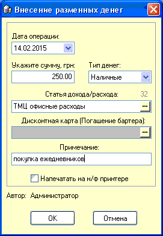

Дата - автоматически устанавливается текущая дата.
Сумма - введите сумму, грн.
Тип денег - наличные/безналичные/бартер.
Статья дохода/расхода - выберите из соответствующего справочника нужное значение двойным кликом мышки. Необязательный параметр.
Дисконтная карта (погашение бартера) - если внесение связано с погашением задолженности клиента по карте, то выберите из справочника или отсканируйте его карту. Должна быть выбрана статья расхода/дохода с названием "Погашение бартера".
Примечание - до 35 символов.
Напечатать на н/ф принтере - опция вывода на печать подтверждающего операцию документа.
Автор - присаивается автоматически по вошедшему в программу пользователю.